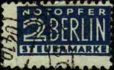

Eternal
vigilance is the price of liberty |
From the Modern History of Germany
| I wrote,
under the subject Non-Anniversary: Today the former German Democratic Republic should has
celebrated its 50th anniversary. Fortunately it doesn't exist
anymore to do it with the usual pomp and a false enthusiasm. The first
stamp of the GDR was issued 1949, Oct. 9 and was dedicated to the 75th
anniversary of the UPU. The last stamps (the 41st Congress of the Intl.
Astronautics Federation, Dresden, Scott No. 2849-2852) were issued 1990,
Oct. 2 and remained valid until Dec. 31, 1991. Amen. Posted the 10/9/99 on RCSD Charlie Jensen answered: Victor writes; :Today the former German Democratic Republic......doesn't exist anymore...." A fact that we should all be grateful for, and deserving some sort of commemoration in itself. Perhaps a moment of silence to all the brave men and women who gave their lives to make it so. My comment: And a good wish to those who
live today and who (satiated for being oppressed in their own name and
subjugated for their "happiness") demonstrated 10 years ago on
the streets of GDR with slogans like: "_We_ are the people - Wir
sind das Volk!" (emphasis added).
Dave Joll wrote: The "Wir Sind Das
Volk" stamp was issued on 28 February 1990 by the postal service of
the former DDR, denominated at 35 + 15 pfennig and catalogued by Stanley
Gibbons as E3011. Jan-Martin from Germany wrote by e-mail: I wish people would remember that slogan. |
Tony
Clayton wrote: This is a postal Tax stamp originally issued in
December 1948. It was an obligatory tax for all mail posted in the
Western zones except in and to Berlin itself, to help defray the cost of
the Berlin Airlift. It remained in use until March 1956. The SG
number(s) are AT102 to AT105g. There are two watermarks and many
perforation combinations, including imperf. Gibbons lists it under
British & American Zones.
 I commented: A very interesting postal tax stamp indeed, also historically. About the Berlin Blockade. By 1948 the Soviet Union
had ceased to cooperate with the other three occupying powers. On June
24 that year, in response to the introduction of a new currency, the
Deutschmark, in West Berlin and the three zones of West Germany four
days earlier, the Soviet authorities imposed a complete ban on road,
rail, and canal traffic between the western zones and the capital. On
June 26 the British and American air forces began flying supplies to the
more than two million residents of West Berlin. Between that day and the
lifting of the blockade on May 12, 1949, the Berlin Airlift (or
"air bridge"), consisting of 277,728 flights over East
Germany, carried 2,110,235.5 tonnes of supplies into the city. (After Microsoft
Encarta 1996) |
|
Private Postal Services in Germany
The postal service was some times ago privatized
in Germany. There are several small postal services that compete with the
privatized German Post (Deutsche Post AG), but in the last time two bigger
competitors grown up.
One of them is PIN AG, that targets a market of 15% (today 7.5%) of all German
users of postal services. At time it operates in Berlin, Potsdam and Dresden and
plans to expand toward Leipzig, München, Frankfurt am Main and Hamburg. This
company has already issued for Berlin a number of four privatepostal stamps, as
follows:
- 1.00 DM for standard and compact letters till 50 grams
- 2.00 DM for big letters till the B5 format and 1000 grams
- 2.50 DM for Maxiletters till the format B4 and 1000 grams
Another company, Main-Post-Logistik, combines the delivery of newspapers with
that of letters. All postal mail is franked by labels with barcodes, instead of
postal stamps. The smallest letters cost 0.90 DM (instead of 1.10 DM at Deutsche
Post), and the biggest ones 3.00 DM (4.40 DM at DeutschePost).
Sources: SBZ 10/2000 and SBZ 1/2001
Actually it's not such a new history, because many German stamps were issued a
long time ago by private organizations. I'll take as example the postal empire
of princes Thurn und Taxis, a private postal service that was active between
1852 and 1866 in several German states. Experts of classic German stamps, please
correct a topical stamp collector if he's deadly wrong :-) Posted
the 1/8/2001 on RCSD.

Revised: 01/08/01. |